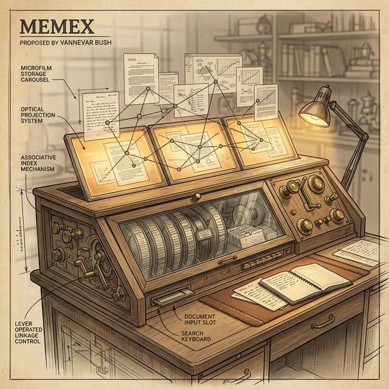

[ PROFILE_006 · SCIENCE CZAR ]
Science: The Endless Frontier
1890 — 1974 · Massachusetts
开拓精神在这个国家依然充满活力。科学为拥有工具的开拓者提供了一片广阔的、尚未开发的腹地。这种探索对国家和个人而言都有着巨大的回报。科学进步是确保国家安全、改善健康、创造更多就业、提高生活水平以及文化进步的关键。 —— 1945年7月5日，致罗斯福总统的回信
如果你觉得现在的斜杠青年很厉害，那一定是因为你还没见过这位二战时期的科学沙皇。他不仅是搞定核武器的幕后推手，还是现代互联网的"祖师爷"，顺便还带出了信息论创始人香农这样的天才学生。
1890年，Bush 出生在马萨诸塞州一个牧师家庭。在 Tufts College 读硕士时，他的毕业设计是一台长得像割草机的"剖面示踪器"——这是他发明清单上的第一炮。随后冲进 MIT 拿下博士，开启了疯狂的"开挂"模式：
参与创立了后来的军工巨头雷神公司。
在真空管都算奢侈的年代造出了微分分析仪——模拟计算机的巅峰之作。
微分分析仪 — 充满整个房间的机械齿轮、传动轴和积分器
二战爆发后，Bush 意识到靠传统大炮巨舰赢不了未来的战争。他拿着一张纸敲开了罗斯福总统的办公室：「我们需要一个统一协调全国科学力量的部门。」总统只用了15分钟就点头签字。
作为 OSRD 的掌门人，他管理着全美最顶尖的 6000 名科学家：
《纽约时报》曾打趣说，Bush 是绕过官僚障碍的大师，不管是顽固的将军还是复杂的难题，在他面前通通得让路。
Vannevar Bush 性格鲜明甚至有些粗粝、独立、直率，极度鄙视浮夸与装腔作势。
在与以威吓下属著称的 Admiral King 会议中，当上将断言某个问题纯粹是军事问题时，Bush 毫不客气地反驳：「这是一个军事与技术相结合的问题，而在后者上，你还是个门外汉。」出人意料的是，这种近乎冒犯的坦率反而开启了一场富有成效的讨论。
当海军拿来一份极其繁琐的合同时，他直接说「叫你的老板滚蛋」，然后开始收拾公文包准备离开。不久，一份极其简洁的合同就摆在了他面前。
工作之外充满创造力和生活情趣——与妻子 Phoebe Davis 相伴53年，两个儿子分别成为外科医生和企业家。他是狂热水手，自己设计帆船的帆，还曾经营过一个火鸡农场，并在家中工作室设计了能阻止大鸟的喂鸟器。
1940年 Norbert Wiener 提议建造数字计算机时，Bush 以"战争结束前无法完成"为由拒绝资助。虽然时间判断准确，但他偏爱模拟技术——陆军最终资助了 ENIAC，开启了通用电子计算机的时代。
1949年他在《现代武器与自由人》中断言洲际弹道导弹"在很长一段时间内都不会实用"。这一预测很快被太空竞赛的现实打破。
应罗斯福总统要求写就的《科学，无尽的前沿》规划了战后美国科学发展的蓝图，是美国科学政策的开山之作。他建议政府大力支持科研，不需设立研究机构，只需提供经费，让大学和私人企业依照研究表现来竞争政府的研究经费。
二战期间对 OSRD 的管理是领导力和组织创新的典范——一个高效的"政府创业公司"。
杜鲁门上台后两人从未建立起罗斯福时代的亲密关系。Bush 构想的由科学家主导的独立 NSF 遭到总统否决。1950年妥协版本的 NSF 成立，但总统拥有比 Bush 最初提议大得多的权力。他所倡导的技术官僚理想在和平时期的政治现实中搁浅。
1945年在《大西洋月刊》发表的 As We May Think，是对 1939 年文章《Mechanization and the Record》的修改和扩展。全文分 8 个章节，最后推导畅想出一个叫 Memex 的机器。

Memex — 一张办公桌，多个投影屏，微缩胶卷存储，键盘+杠杆控制
| 特征 | 描述 |
|---|---|
| 外观 | 一张办公桌 |
| 屏幕 | 桌面上多个倾斜的半透明投影屏 |
| 输入 | 键盘 + 按钮组 + 杠杆组 |
| 存储 | 改良微缩胶卷 |
| 容量 | 每天存入5000页，需数百年才能装满 |
💡 核心设计哲学
信息的价值不在于它被存在哪里，而在于它和什么东西连在一起。
联想路径是手动标注——在 Bush
的认知框架里，判断两个东西有关系这件事属于创造性思维，不能交给机器。机器负责记住和追溯，人负责看见和连接。
Memex 不是某一刻的灵光乍现，用了五个章节分别解决五个子问题，每个子问题各自产生了一块零件：
大英百科全书 → 一个火柴盒。百万卷图书馆 → 一张桌子的一头。人类所有出版物 → 一辆货车。这就是为什么 Memex 是一张桌子而不是一栋楼。
桌面顶部放一块透明压板，把任何手写的东西放上去，按一下杠杆，就被干式摄影到胶卷的下一个空白位置。用户不是只能读买来的书，还能随时把想法写进系统。
杠杆翻书——轻推一页一页翻，再推十页十页翻，再推一百页一百页翻。向左反向。一个按钮直接跳回索引首页。
多个投影屏同时对照查看。并行对照意味着两个信息可以同时出现在视野里，而"同时出现"正是"建立联系"的物理前提。
Bush 跳出技术视角审视人脑：人脑不按索引工作，人脑按联想工作。你想到"土耳其弓"，不是先想到"T开头的词条"，而是瞬间联想到"十字军东征"→"弹性材料"→"文化保守性"。
现有索引系统强迫人按"系统"的逻辑走而非"人脑"的逻辑。所以 Memex 的灵魂不是存储，不是检索，而是——让用户在两个任意项目之间建立永久的、可追溯的联想链接。
Bush 预言将会出现一个新职业——路径开拓者，他们乐于通过庞大的公共记录建立有用的路径。一个博学的学者花一辈子时间建立的路径网络——这张"联想之网"本身——就是他最大的遗产。
门徒拿到的不只是大师写了什么，而是大师的思维路径本身。Bush 对自动联想问题给出的1945年式回答：用人类专家的智慧去编织联想网络，然后通过复制和分享让这种智慧可以被继承和叠加。不是自动化，而是社会化。
路径 1：为什么过去做不到的事现在能做到？
莱布尼茨计算器（1694）
│ 连接理由：能造，但手工成本 > 节省的劳动
▼
巴贝奇差分机（1830s）
│ 连接理由：能造，但建造和维护成本过重
▼
法老造汽车（思想实验）
│ 连接理由：能理解设计，但制造能力不存在
▼
打字机 / 汽车 / 热电子管（当代）
│ 连接理由：量产 + 可靠性，成本断崖式下降
▼
结论："世界已进入廉价复杂设备的时代，
某些事情必然会从中诞生。"
路径 2：从传真机到即时相机
传真机
│ 原理：光电池逐行扫描 → 电信号 → 远端复原
│ 洞察："如果不传到远端呢？"
▼
"传真机即相机"
│ 扫描和成像在同一处 → 就是干式相机
▼
电视
│ 差异：电子束替代指针（更快）；荧光屏（非永久）
│ 洞察："如果用胶片替代荧光屏，只拍一帧呢？"
▼
结论："干式即时摄影在原理上已经成立，
障碍是工程细节，不是物理定律。"
路径 3：语音如何变成文字
Voder（世博会展品）
│ 按键 → 组合电振动 → 扬声器发出人声
│ 洞察："语音可以被键盘反向拼装"
▼
Vocoder（贝尔实验室）
│ Voder 的逆向——麦克风 → 对应的键自动移动
│ "输入端解决了"
▼
Stenotype（法庭速记机）
│ 击键 → 吐出简化语言的纸带
│ "输出端解决了"
▼
Vocoder + Stenotype = "对着它说话，它就打字"
路径 4：选择信息 → 通向 Memex
逐条扫描 → 太慢
▼
分级跳转（电话交换机）→ 快，但仍需机械开关
▼
热电子管替代机械开关 → 百分之一秒完成
▼
光电池读取 + 电子束写入 → 整套操作一秒钟
▼
关键转折——Bush 的注释：
"但这一切仍然是'简单选择'。
根本问题不在速度，在于索引方式反人脑直觉。"
▼
通向 Memex 的入口
🔑 四条路径教会的思维方式
路径1：如何判断时机——看经济曲线而非技术可行性
路径2：如何从已有技术推导未来设备——逐步替换零件
路径3：如何发现跨领域的接口——A的输出就是B的输入
路径4：如何知道自己在错误的维度上努力——走到极致后的范式切换
知识碎片是砖，路径是脚手架。砖块谁都能搬，但脚手架——怎么搭、搭在哪里、为什么拐弯——这是大师花一辈子才建立起来的东西。
| 角色 | 含义 |
|---|---|
| 🏛️ 大师级匠人 | 开创性科学家（爱因斯坦、费曼） |
| 🪨 凿石者 | 一线科研工作者 |
| 🔧 建造者 | 工程师 |
| 📖 叙事者 | 科普作家、科学史家 |
| 💰 后勤 | 资助者 |
| 🧭 传承者 | 导师、精神领袖 |
| 🔍 挖掘者 | 出于好奇心的研究者 |
谨献给 Vannevar Bush
1916 届校友
一位杰出的工程师，以其对科学、工程和国家的创造性贡献而享有盛誉。
因其在研究与教育领域的卓越成就而备受尊崇。
因其在第二次世界大战期间动员全国科学资源，
推动军事技术取得决定性进展，为赢得战争做出了关键贡献。
因其以政治家的远见，制定并倡导推进科学、工程与教育事业的卓越政策。
—— MIT 13 号大楼 · 1965 年 10 月 1 日